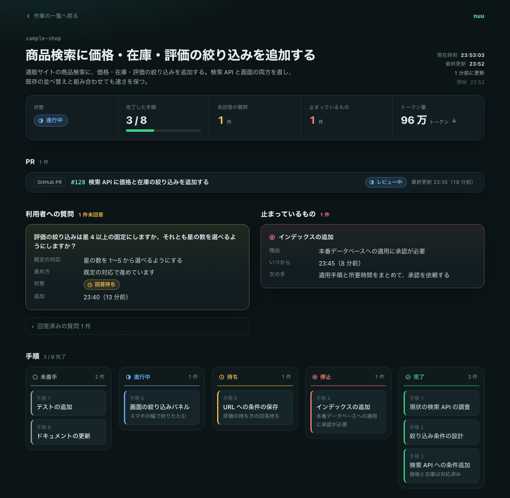
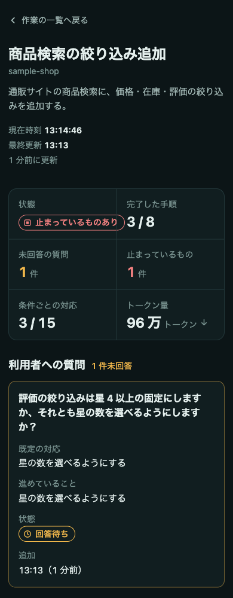
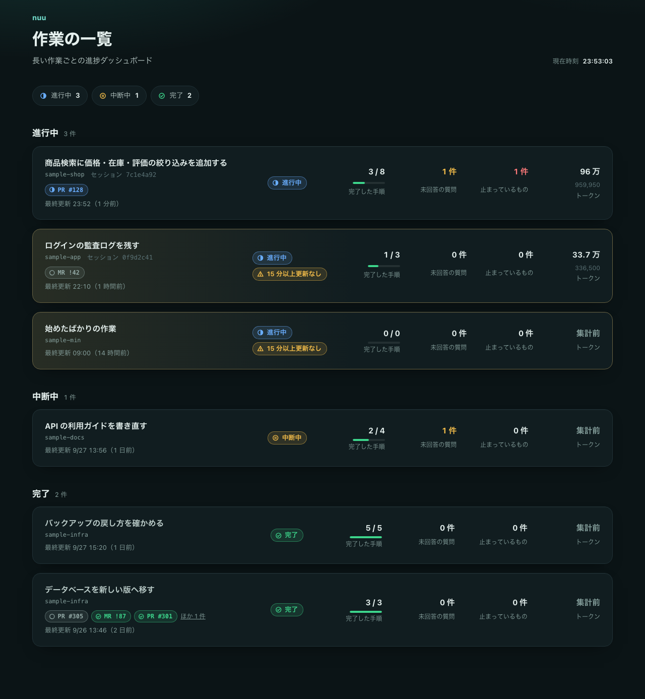
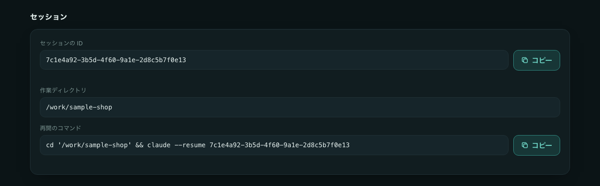
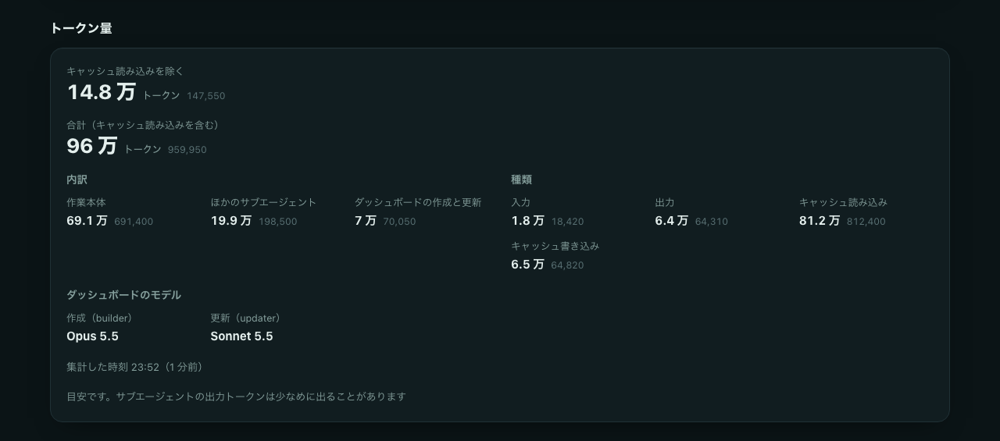

nuu
Claude Code に長い作業を任せている間、「今なにしてる？」に 1 枚の HTML で答えるサブエージェントです。
ぬーやが？沖縄の言葉で「なに？」。「ぬー」は「何」を意味します。
実験的なツールです。動作は macOS と Claude Code 2.1.283 で確認しています。Claude Code の更新で、動きが変わることがあります。
開けば、進み具合と待っていることがわかる


- 作業に合わせたパネル進み具合の棒、マス目、表、項目と値、文章、推移のグラフ、段階の流れの 7 種類から、作業に合うものを選んで並べます。
- 手順はカンバンで未着手、進行中、待ち、停止、完了の列に並びます。やらないと決めた手順は「見送り」の列に置きます。頼めばリストにも変えられます。
- 質問と既定の対応判断が必要になっても止まらず、既定の対応で進めていることを載せます。
- 止まっているもの何が、なぜ、いつから止まっていて、次に何をするかを載せます。
- 作業の GitHub / GitLab作業に関係する PR・MR、Issue、リリースと、作業で作ったリポジトリを、種類、番号か題名、状態と一緒に載せます。一覧の行の札からも開けます。
- トークン量の目安作業本体と、ダッシュボードの作成と更新に分けて、使ったトークン量を出します。上部と一覧には、大半を占めるキャッシュの読み込みを除いた量を出し、合計は下部に並べます。ダッシュボードを作成・更新したモデルも並べます。
- 作業したセッションに戻るセッションの ID と、
claude --resumeで再開するコマンドを載せます。コピーして、作業した会話に戻れます。 - 全体の一覧全プロジェクトの作業を並べ、更新が止まっている作業を目立たせます。
- ブラウザで開くだけサーバーもツールも要りません。HTML を開けばブラウザで見られ、10 秒ごとにデータだけを読み直します。ページごと再読み込みしないので、ちらつかず、スクロール位置もそのままです。
- 好みはひとつテーマ、密度、アクセントカラー、タスクの表示を、すべてのダッシュボードで共通に使います。変えると、開いているページにも 10 秒ほどで届きます。



作業する Claude と、ダッシュボードを書く係を分ける
作業そのものは、いつもの Claude Code が進めます。ダッシュボードを書くのは、専用の 2 つのサブエージェントです。書き込みはすべてフックのスクリプトを通り、決まった場所にだけ書かれます。
作業に合わせて、1 枚目を作る
作業の性質を見て、7 種類のパネルから載せるものと並びと中身を選び、作業のデータを書きます。HTML は書きません。初回だけ、好みのテーマ、密度、アクセントカラーを聞き、すべてのダッシュボードに使います。builder と updater のモデルは、頼めば ~/.claude/nuu/settings.json に保存して変えられます。
途中の更新は、軽く速く
回数の多い途中の更新は、effort low で変わった箇所だけを書き換えます。作業のデータファイルだけを書き換え、パネルの構成と一覧には触れません。今のパネルに収まらない変化は、builder に回します。
書き込みを、スクリプトで確かめる
ガードが読み書きできる場所を絞り、書いた直後にデータが決まった形かを確かめます。作業ごとのページのファイルと一覧のデータは、すべての作業のデータからスクリプトが作ります。トークン量は、Claude Code の会話の記録からスクリプトが集計します。セッションの ID と作業ディレクトリも、フックに渡された値をスクリプトが書きます。
見た目と動きは、リポジトリに置く
ページの見た目と動きは、リポジトリの client/ にある固定の HTML、CSS、JavaScript が受け持ちます。すべてのページがリンク越しに同じファイルを読むので、git pull すれば、前に作ったダッシュボードも開き直したときに新しい動きになります。
1 つの作業で起きること
- 1
長い作業を頼む
5 ステップを超える作業や、30 分を超えそうな作業だと判断されると、作業の前にダッシュボードが用意されます。確実に使いたいときは「ダッシュボードを用意してから進めて」と頼みます。
- 2待つ・30 秒ほど
ダッシュボードを用意する
builder が作業のデータを書くと、フックが作業ごとのページを置き、全体の一覧に行を足します。Claude Code は、2 つのページの場所を伝えます。
- 3待たない
手順ごとに更新する
手順を 1 つ終えるたびに、updater がバックグラウンドで更新します。作業は更新を待たずに進み、前の更新が終わっていなければ、次の変化とまとめて渡します。
- 4止まらない
判断が必要になったら
質問と既定の対応をダッシュボードに載せ、既定の対応で作業を続けます。都合のよいときにダッシュボードで質問を確かめ、答えは Claude Code に伝えます。
- 5承認を待つ
取り消せない操作は別
削除、push、送信のような取り消せない操作や外部に公開される操作は、既定の対応では進めず、承認を待ちます。その間も、進められるほかの手順があれば続けます。
- 6待つ
途中で止めたら、中断中にする
「今日はここまで」のように止めると、ダッシュボードを中断中にしてから報告します。中断中の作業には、更新が止まっている警告を出しません。再開すると、進行中に戻してから続けます。
- 7待つ
完了にして報告する
作業が終わったら、手順とパネルの最終状態を渡してダッシュボードを完了にし、それから報告します。完了の作業には未着手や途中の値を残しません。一覧では、完了した作業の側に移ります。
ダッシュボードを書く係は、ほかに何もできない
読み書きできる場所を絞る
ダッシュボードを書く 2 つのサブエージェントが読めるのは ~/.claude/nuu/dashboards/ だけ、書けるのは作業のデータと好みだけです。ページのファイル、一覧、トークン量はスクリプトが書きます。コマンドは、時刻を取る date だけを使えます。
作業ディレクトリには何も作らない
ダッシュボードはホームの決まった場所にまとまるので、作業中のリポジトリに余計なファイルが増えません。
時刻は実際の時計から
記録する時刻は、推測ではなく date で取った値です。更新が 15 分以上止まっていると、ダッシュボードと一覧が知らせます。
CLAUDE.md に 1 行を書き込む
install.sh は ~/.claude/CLAUDE.md に、ルールを読み込む 1 行を足します。dotfiles などでシンボリックリンクにしている場合は、リンク先の実体に書き込みます。uninstall.sh は、その 1 行だけを消します。
残る内容に注意
ダッシュボードには、作業の概要や質問、成果物のパスがそのまま残ります。スマホなどから見るために外部へ公開するときは、その中身ごと見えることになります。公開の仕組みは、利用者が自分の環境で用意します。ページは _client（リポジトリの client/ へのリンク）を読むので、公開先でもリンクをたどれるようにします。
対話のセッションで使う
claude -p のような対話なしの実行では、ダッシュボードを作れません。ガードが許可しても、Claude Code が ~/.claude の下への書き込みを止めるためです。auto モード以外の対話のセッションでは、ダッシュボードへの書き込みのたびに確認が出ます。auto モードで使うと、確認なしで進みます。
ダッシュボードにかかる料金の目安
| 場面 | 担当 | 1 回あたり | 時間 |
|---|---|---|---|
| ダッシュボードの用意 | dashboard-builder（opus） | 約 $0.2〜0.3 | 25 秒前後 |
| 途中の更新と完了 | dashboard-updater（sonnet） | 約 $0.02〜0.03 | 10〜20 秒前後 |
用意の目安は、Claude Code 2.1.285 で性質の違う 3 つの作業を 1 回ずつ用意したときの値です。幅は、キャッシュの保持時間（5 分か 1 時間）でキャッシュへの書き込みの単価が変わるためです。同じ測り方で、sonnet の builder は約 $0.1〜0.17、20 秒前後でした。料金を抑えたいときは、builder を sonnet に変えられます。builder は HTML を書かず、データだけを書くので、用意を短く済ませられます。
途中の更新と完了の目安は、10 通りの作業の流れで 1 回ずつ測った実測です。料金は会話の記録のトークンから推計したもので、記録の都合で少なめに出ることがあります。途中の更新はバックグラウンドで行うので、作業はその時間を待ちません。
API の単価で計算した目安です。契約の形態によっては、料金ではなく使用量の上限に数えられます。トークン量は、会話の記録の都合でサブエージェントの出力が少なめに出ることがあります。
macOS か Linux で、Claude Code と一緒に
bash、jq、python3（clone に git）が必要です。Claude Code CLI と、デスクトップアプリで開く Code（ローカル）で使えます。クラウドは手元の設定を読まず、Cowork はサブエージェントを読み込まないため、使えません。詳しい手順と、アンインストールの方法は README にまとめています。
clone して、リンクを張る
~/.claude にサブエージェント、フック、ページの見た目と動き（client/）、Claude Code の中で見せる mod（mod/）のリンクを作ります。mod は ~/.claude/settings.json の CLAUDE_CODE_PLUGIN_DIRS に足し、/nuu で開けるようにします。git やネットワークは使いません。既存のファイルがあれば、上書きせずに止まります。
git clone https://github.com/shimabox/nuu.git
cd nuu
./install.shCLAUDE.md にルールを読み込ませる
install.sh が ~/.claude/CLAUDE.md の末尾に次の 1 行を足します。長い作業でダッシュボードを使うよう、Claude Code に伝えるルールを読み込む行です。書き換えたくないときは --no-claude-md を付けて実行し、この 1 行を自分で足します。
@~/.claude/nuu/claude-instructions.md長い作業を頼んで、一覧を開く
初回だけ好みを聞かれます。できたダッシュボードは、一覧からたどれます。
open ~/.claude/nuu/dashboards/index.htmlClaude Code の中でも見る（実験的）
/nuu で今のプロジェクトの作業を、/nuu all で全プロジェクトの作業をペインに出します。開いた直後は、o でブラウザで開く、n / p で次と前の作業、a で範囲の切り替え、q か Esc で閉じます。プロンプトに戻ったあとは、ctrl+x のあと tab でペインに戻ります。/tui fullscreen で全画面にすると、クリックでも操作できます。Claude Code の early access の機能を使うので、更新で動かなくなることがあります。settings.json を書き換えたくないときは ./install.sh --no-mod を使います。uninstall.sh は、足した mod のパスだけを外します。
/nuu
/nuu all